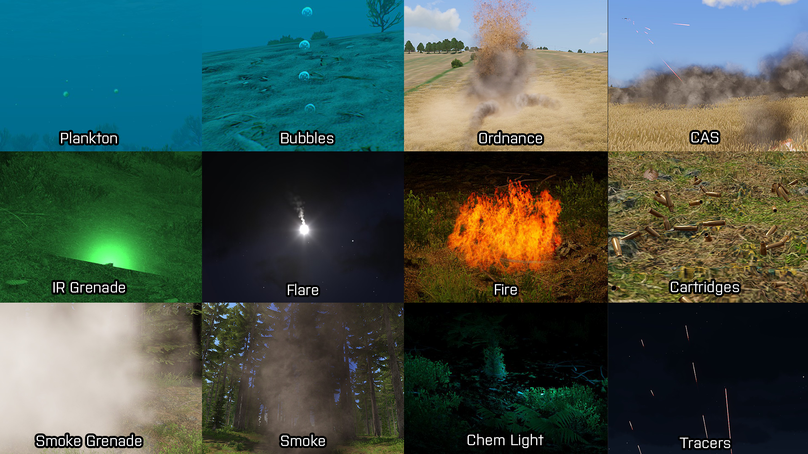

Ambient
Ambient / Civilian Presence modules add civilians to the designated area.
Civilians can't spawn if player is nearby.
How to set up:
- Open your Systems: Modules: Ambient.
- All the modules there, place them on the ground.
- Sync. "Civilian Presence Spawnpoint" and "Civiliand Presence Position" to the main module "Civilian Presence".
- You can tweak the Attributes of the modules but thats all.
Audio
Audio is one of the smallest modules, it plays radio message from factions HQ.
How to set up:
- Open your Systems: Modules: Audio.
- Select the only one module there and place it on the ground.
- Double click it and select Side voice and then the actual message.
- All you need now is some way to activate it. It can be done via Trigger.
- Go to Triggers section, select trigger and place it o the ground.
- Edit the activation as you want and then sync. it to the radio message.
- Now just activate the trigger in the game and there you go.
Effects
Effects are cool addition to make you immerse in the mission. And they also contain very useful Air Strikes and Artillery Strikes.
They are no problem to set up, you just place them on the ground or in the sky and it's done.
None of the needs to be triggered by trigger, they trigger them selfs on start.
There are all the effects available:
- Plankton - Adds plankton to the water (Must be placed in the water).
- Bubbles - Adds bubbles to the water, can be customized to vary in sizes (Must be placed it the water).
- Ordnance - Calls for an Artillery Support on module position (Can be activated via. Trigger).
- CAS - Calls for an Air Support on module position (Can be activated via. Trigger).
- IR Grenade - Adds flashing grenade on the ground (Only can be seen thru Night vision or Thermal vision).
- Flare - Adds Flare in the skyes, custom color.
- Fire - Adds Fire effect on the ground (It can hurt you, customizable colors).
- Cartridges - Adds set number of cartridges on the ground (Must be placed on the Terrain).
- Smoke Grenade - Adds activated smoke grenade on the ground.
- Smoke - Adds dark smoke effect on the ground.
- Chem Light - Adds chem light on the ground (Can be seen in the dark, great for navigation).
- Tracers - Adds tracers shooting from the ground in the sky (Target can be selected).
Enviroment
Enviroment modules mainly let you manipulate with terrain objects and change time / weather.
There are six enviroment modules:
- Edit Terrain Object - Allow you to edit selected terrain object (lock door, destroy object, remove object).
- Hide Terrain Objects - Allow you to hide large portions on terrain objects (can be filtered by types: vegetation, buildings etc..)
- Post-Process - Changes screen colors (black and white).
- Skip Time - Skips set hours of time.
- Time Acceleration - Changes how long one in-game hour is.
- Weather - Allows you to change weather.
Events
Events are mix of diffirent things, where Save Game module is the best of them.
All of them should be executed by trigger (Don't have to be).
Heres list of all Events Modules:
- Date - Allows you to change date (Year, Month, Day, Hour, Minute).
- Generic Radio Message - Same as Audio Module here.
- Radio Chat - Lets you say custom written message (To group, side, global).
- Save Game - Lets you save game, great if you don't want to loose progress.
- Volume - Allows you to set diffirent types of sounds to 0-1 range of levels.
Intel
Intel Modules allow you to create nicely looking missions with diffirent tasks and also allow you to write in your diary.
Types are these ones:
- Create Task - Lets you create custom task, location, title, description, icon.
- Set Task Destination - Sets Destination of synced. Task (Can be on moving target).
- Set Task Description - Sets Description of synced. Task.
- Set Task State - Sets State of synced. Task.
- Create Diary Record - Lets you write info about mission, target, etc..
How to set-up:
- Open your Systems: Modules: Intel.
- Select module "Create Task" and place it on the ground.
- You can tweak some Attributes, but that's all you've got to do.
Keyframe Animation
Keyframe Animation lets you animate object and camera movement.
Camera can be focused at set object, for that to happen you would need to get the objects Eden ID and Variable
Name, you can get the ID by having the object selected and in the console (Can be opened by ~) typing
get3DENEntityID(get3DENSelected "object" select 0).
For animation camera movement there better thing (For me) here.
How to set up:
- Open your Systems: Modules: Keyframe Animation.
- There are three crutial modules that you need to have: "Rich Curve", "Timeline" and at least two times "Rich Curve Key".
- Modules "Timeline" and both "Rich Curve Keys" sync. to the "Rich Curve".
- In "Rich Curve Keys" Attributes, you need to set the time 0-inf. the smallest number goes first.
- The object you want to Animate you need to sync. to the "Rich Curve" module.
Multiplayer
Multiplayer modules allows you to respawn certain things after they've been destroyed.
Respawn position can be also made by command previously mentioned: respawn west.
I won't be counting "Sectors" as Multiplayer modules, you will find more on them here.
These modules contain:
- Respawn Position - Allows players to respawn at set position when they die (Only in multiplayer if respawn is allowed).
- Vehicle Respawn - Synced. vehicles will respawn at set position. (MUST be synced to the module.
Object Modifiers
Object Modifiers modify existing Assets in the game (Activated by a trigger).
There are many modules in this category, here's the list of them:
- Add Rating / Score - Add points to the Side / Unit
- Open / Close Doors - Opens and Closes doors.
- Set AI Mode - Changes Units capabilities
- Set Ammo - Sets Units / Vehicles Ammo.
- Set Character Damage - Sets Units Health.
- Set Mode - Changes Units behaviour.
- Set Position / Rotation - Sets Assets Position and Rotation.
- Set Rank - Sets Units rank.
- Set Skill - Sets Units combat skill.
- Set Vehicle Damage - Sets Vehicles Health.
- Set Vehicle Fuel - Sets Vehicles Fuel.
- Show / Hide - Shows or Hides synced. Assets.
- Simulation Manager - Adds Enemy Units if player gets close.
Spawn AI
Spawn AI module does exactly what it's called, it spawns unit of set side in waves (seconds).
They are easy to set up, all you need to do is to place them and all the optional modules sync. to the main.
There are four Spawn AI modules, I'll expalain them:
- Spawn AI - Main module, can spawn AI by it self.
- Spawn AI: Options - This module changes how long it takes for the spawned bodies to despawn.
- Spawn AI: Sector Tactic - This module makes spawned AI fight for the sectors in Sector Control gamemode, more on that here.
- Spawn AI: Spawnpoint - Spawnpoint for the AI.
Sites
Sites spawn set number of units/mines inside the designated area of any faction.
They don't need any Triggers or Preperation for it to work, just place it and it's done.
Main types are these:
- SIDE Sites - Spawn units of selected side.
- Animal Sites - Spawn selected type of animals (Dogs, sheep, etc.).
- Minefield - Places selected type of mines in the area.
Strategic
Strategic module let's you make big scale missions (like those official one on Altis).
And they're also not that hard to set up:
- Open your Systems: Modules: Strategic.
- You'll find three main modules: Strategic Map, Open Strategic Map and Mission. Place them on the ground.
- Open Strategic Map and Mission sync. to the Strategic Map. Also Open Strategic Map sync. to the player.
- Tweak the Mission Attributes and you're done.
Support
Support modules allows you to call for a Artillery/Air support at any designation and at any time.
There are two main types of Support:
- Virtual - Virtual Support allows you to call in for support even if there's no physical support on the map.
- Normal - You must have this support linked with an actual physical Artillery/Aircraft.
How to set up:
- Open your Systems: Modules: Support.
- Select the "Support Requester" and sync. it with playable character.
- Select any type of Support from the modules and place it down.
- Sync. the selected module to the "Support Requester" (If not virtual, must be synced with physical support unit).
- Start the game and call for the support, done.